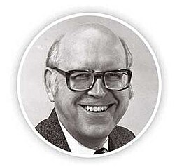

Allen Newell | |
|---|---|
 | |
| Born | March 19, 1927 |
| Died | July 19, 1992 (aged 65) |
| Education | Stanford University (BS) Princeton University Carnegie Mellon University (MS, PhD) |
| Known for | Information Processing Language Logic Theorist General Problem Solver Soar Unified Theories of Cognition |
| Spouse |
Noel McKenna (m. 1947) |
| Awards | A.M. Turing Award (1975) IJCAI Award for Research Excellence (1989) IEEE Emanuel R. Piore Award (1990) National Medal of Science (1992) Louis E. Levy Medal (1992) |
| Scientific career | |
| Fields | Computer science Cognitive psychology |
| Institutions | Carnegie Mellon University |
| Herbert A. Simon | |
Doctoral students | Hans Berliner Stuart Card John E. Laird Frank Ritter Milind Tambe |
{kind=link}
Allen Newell (March 19, 1927 – July 19, 1992) was an American researcher in computer science and cognitive psychology at the RAND Corporation and at Carnegie Mellon University's School of Computer Science, Tepper School of Business, and Department of Psychology. He, Herbert A. Simon, and Cliff Shaw contributed to the Information Processing Language (1956) and two of the earliest AI programs, the Logic Theorist (1956) and the General Problem Solver (1957). He and Simon were awarded the ACM Turing Award in 1975 for their contributions to artificial intelligence and the psychology of human cognition.[1][2]
Early studies
Newell completed his bachelor's degree in physics from Stanford in 1949. He was a graduate student at Princeton University from 1949 to 1950, where he studied mathematics. Due to his early exposure to an unknown field known as game theory and the experiences from the study of mathematics, he was convinced that he would prefer a combination of experimental and theoretical research to pure mathematics.
In 1950, he left Princeton and joined the RAND Corporation in Santa Monica where he worked for "a group that was studying logistics problems of the Air Force".[2] His work with Joseph Kruskal led to the creation of two theories: A Model for Organization Theory and Formulating Precise Concepts in Organization Theory. Newell eventually earned his PhD from the now Tepper School of Business at Carnegie Mellon with Herbert Simon serving as his advisor.
Afterwards, Newell "turned to the design and conduct of laboratory experiments on decision making in small groups".[2] He was dissatisfied, however, with the accuracy and validity of their findings produced from small-scale laboratory experiments. He joined with fellow RAND teammates John Kennedy, Bob Chapman, and Bill Biel at an Air Force Early Warning Station to study organizational processes in flight crews. They received funding from the Air Force in 1952 to build a simulator that would enable them to examine and analyze the interactions in the cockpit related to decision-making and information-handling. From these studies, Newell came to believe that information processing is the central activity in organizations.[3]
Artificial intelligence
In September 1954, Newell enrolled in a seminar where Oliver Selfridge "described a running computer program that learned to recognize letters and other patterns".[2] This was when Allen came to believe that systems may be created and contain intelligence and have the ability to adapt. With this in mind, Allen, after a couple of months, wrote in 1955 The Chess Machine: An Example of Dealing with a Complex Task by Adaptation, which "outlined an imaginative design for a computer program to play chess in humanoid fashion".[2]
His work came to the attention of economist (and future nobel laureate) Herbert A. Simon, and, together with programmer J. C. Shaw, they developed the first true artificial intelligence program[4](see notes), the Logic Theorist. Newell's work on the program laid the foundations of the field. His inventions included: list processing, the most important programming paradigm used by AI ever since; the application of means-ends analysis to general reasoning (or "reasoning as search"); and the use of heuristics to limit the search space.
They presented the program at the Dartmouth conference of 1956, an informal gathering of researchers who were interested in simulating intelligence with machines. The conference, now widely considered the "birth of artificial intelligence",[5] was enormously influential and those who attended became the leaders of AI research for the next two decades, Newell included.
Later achievements
Newell and Simon formed a lasting partnership. They founded an artificial intelligence laboratory at Carnegie Mellon University and produced a series of important programs and theoretical insights throughout the late fifties and sixties. This work included the General Problem Solver, a highly influential implementation of means–ends analysis, and the physical symbol systems hypothesis, the controversial philosophical assertion that all intelligent behavior could be reduced to the kind of symbol manipulation that Newell's programs demonstrated.
Newell's work culminated in the development of a cognitive architecture known as Soar and his unified theory of cognition, published in 1990, but their improvement was the objective of his efforts up to his death (one of the last Newell's letters Archived 2011-05-14 at the Wayback Machine). The field of cognitive architectures, that he initiated, is still active in both the artificial intelligence and computational cognitive science communities.[6]
Awards and honors
- 1971 — John Danz Lecturer, University of Washington
- 1971 — Harry Goode Memorial Award, American Federation of Information Processing Societies
- 1972 — Elected to member of the United States National Academy of Sciences[7]
- 1972 — Elected to Fellow of the American Academy of Arts and Sciences[8]
- 1975 — A. M. Turing Award (with Herbert A. Simon), Association for Computing Machinery[9]
- 1976–77 — Guggenheim Fellowship, John Simon Guggenheim Memorial Foundation[10]
- 1979 — Alexander C. Williams Jr. Award (with William C. Biel, Robert Chapman and John L. Kennedy), Human Factors Society
- 1980 — Elected to member of the United States National Academy of Engineering[11]
- 1980 — First President, American Association for Artificial Intelligence
- 1981 — Charter recipient of the Computer Pioneer Award from the IEEE Computer Society[12]
- 1985 — Distinguished Scientific Contribution Award, American Psychological Association
- 1986 — Doctor of Science (Honorary), University of Pennsylvania
- 1987 — William James Lectures, Harvard University
- 1989 — Award for Research Excellence, International Joint Conference on Artificial Intelligence
- 1989 — Doctor in the Behavioral and Social Sciences (Honorary), University of Groningen, The Netherlands
- 1989 — William James Fellow Award (charter recipient), American Psychological Society
- 1990 — IEEE Emanuel R. Piore Award[13]
- 1990 — IEEE W.R.G. Baker Prize Paper Award[14]
- 1990 — Fellow of the Association for the Advancement of Artificial Intelligence[15]
- 1992 — U.S. National Medal of Science[16]
- 1992 — The Franklin Institute's Louis E. Levy Medal[17]
The ACM - AAAI Allen Newell Award was named in his honor. The Award for Research Excellence of the Carnegie Mellon School of Computer Science was also named in his honor.
See also
Notes
[i]Logic theorist is usually considered the first true AI program, although Arthur Samuel's checkers program was released earlier. Christopher Strachey also wrote a checkers program in 1951[18]
References
- ^ "Allen Newell, 65; Scientist Founded A Computing Field". The New York Times. July 20, 1992. Retrieved November 28, 2010.
- ^ a b c d e Herbert A. Simon. "Allen Newell, Biographical Memoirs". United States National Academy of Sciences. Retrieved November 28, 2010.
- ^ "Allen Newell *50 | Princeton Alumni Weekly". paw.princeton.edu. Retrieved 2024-10-07.
- ^ McCorduck, Pamela (2018). Machines who think: a personal inquiry into the history and prospects of artificial intelligence. An A K Peters book. Boca Raton London New York: CRC Press. ISBN 978-1-56881-205-2.
- ^ Crevier, Daniel (1993). AI: The Tumultuous Search for Artificial Intelligence. New York, NY: BasicBooks. pp. 49–51. ISBN 0-465-02997-3.
- ^ Kotseruba, I.; Tsotsos, JK (2020). "40 years of cognitive architectures: core cognitive abilities and practical applications". Artificial Intelligence Review. 53 (1): 17–94. doi:10.1007/s10462-018-9646-y. S2CID 51888132.
- ^ "Search Deceased Member Data". United States National Academy of Sciences. Archived from the original on October 3, 2006. Retrieved July 16, 2011. Search with Newell as last name.
- ^ "Book of Members, 1780-2010: Chapter N" (PDF). American Academy of Arts and Sciences. Retrieved July 16, 2011.
- ^ "A. M. Turing Award". Association for Computing Machinery. Archived from the original on 2009-12-12. Retrieved February 10, 2011.
- ^ "Search Fellows". John Simon Guggenheim Memorial Foundation. Archived from the original on 2012-09-23. Retrieved July 18, 2011. Search for Newell between 1976 and 1977.
- ^ "NAE Members Directory - Dr. Allen Newell". United States National Academy of Engineering. Retrieved January 22, 2011.
- ^ "Computer Pioneer Charter Recipients". IEEE Computer Society. Archived from the original on 2013-07-21. Retrieved July 16, 2011.
- ^ "IEEE Emanuel R. Piore Award Recipients" (PDF). IEEE. Archived from the original (PDF) on 2010-11-24. Retrieved December 30, 2010.
- ^ "IEEE W.R.G. Baker Prize Paper Award Recipients" (PDF). IEEE. Archived from the original (PDF) on April 25, 2011. Retrieved November 28, 2010.
- ^ "Elected AAAI Fellows". AAAI. Retrieved 2023-12-31.
- ^ "The President's National Medal of Science: Recipient Details Allen Newell". US National Science Foundation. Retrieved November 28, 2010.
- ^ "Franklin Laureate Database - Louis E. Levy Medal Laureates". Franklin Institute. Archived from the original on June 29, 2011. Retrieved January 22, 2011.
- ^ Crevier, Daniel (1993). AI: the tumultuous history of the search for artificial intelligence. New York: Basic books. ISBN 978-0-465-02997-6.
- ^ Logic theorist is usually considered the first true AI program, although Arthur Samuel's checkers program was released earlier. Christopher Strachey also wrote a checkers program in 1951
Further reading
- Allen Newell at the Mathematics Genealogy Project
- Allen Newell at the AI Genealogy Project.
- Oral history interview with Allen Newell at Charles Babbage Institute, University of Minnesota, Minneapolis. Newell discusses his entry into computer science, funding for computer science departments and research, the development of the Computer Science Department at Carnegie Mellon University, including the work of Alan Perlis and Raj Reddy, and the growth of the computer science and artificial intelligence research communities. Compares computer science programs at Stanford, MIT, and Carnegie Mellon.
- Full-text digital archive of Allen Newell papers
- Mind Models online Artificial Intelligence exhibit
- Publications by Allen Newell from Interaction-Design.org
- Allen Newell Archived 2012-10-07 at the Wayback Machine by Gualtiero Piccinini in New Dictionary of Scientific Biography, Thomson Gale, ed.
External links
- Herbert A. Simon, "Allen Newell", Biographical Memoirs of the National Academy of Sciences (1997)
 Quotations related to Allen Newell at Wikiquote
Quotations related to Allen Newell at Wikiquote